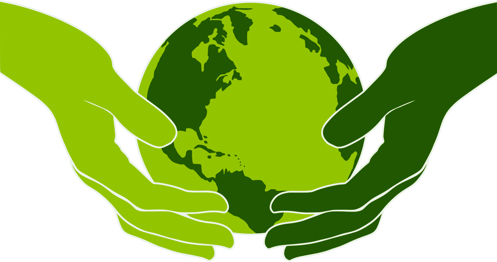
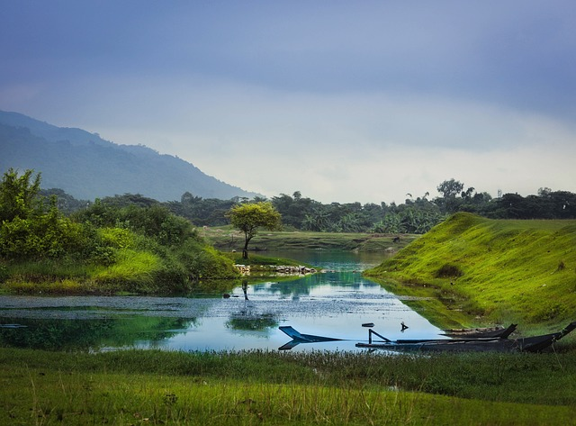

Kenya Moja
 Climate change impacts the most vulnerable communities in Kenya the hardest, exacerbating poverty and posing risks to wildlife and tourism. Addressing climate justice involves supporting those in need, adopting sustainable practices, and empowering marginalized communities for a fair and resilient future.
Potential Solutions
 Various software and technology solutions can contribute to addressing climate justice in Kenya and promoting positive change and sustainability. Some of these solutions include:
Various software and technology solutions can contribute to addressing climate justice in Kenya and promoting positive change and sustainability. Some of these solutions include:
- Climate Monitoring and Early Warning Systems
- Renewable Energy Technologies
- Agricultural Technology and Precision Farming
- Mobile Applications for Climate Information and Advisory Services
- GIS Mapping and Land Management Systems
- Emission Tracking and Reporting Systems
the main objective
 Addressing climate justice in Kenya is crucial for achieving a fair and sustainable future. By leveraging technology solutions and taking action, we can empower marginalized communities, foster sustainability, and drive positive transformation. Let's join hands for a resilient and equitable society.